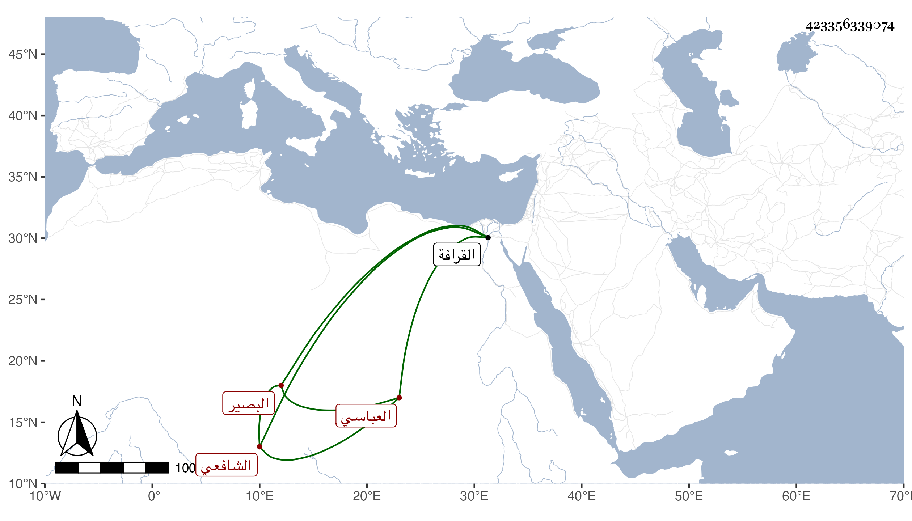

0902Sakhawi.DawLamic.ITO20230111-ara1.EIS1600.423356339074
Biography ID: 423356339074
244
محمد بن محمد بن صلاح بن أبي بكر الشرف أبو الطيب بن الشمس العباسي نسبة للشيخ أبي العباس البصير المدفون بزاويته بالقرافة ونزيل المكان الذي صار معروفا به باب الخرق الشافعي . ولد في ليلة ثاني عشر ربيع الأول سنة إحدى وأربعين بالزاوية الثانية ونشأ بها فحفظ القرآن وتلابه لغير واحد من القراء على الزين عبد الغني الهيثمي والشاطبية والتنبيه والملحة ، وعرض على جماعة واشتغل على البامي والشمس الابناسي والفخر عثمان المقسي وحضر دروس المناوي والمحلي وغيرهما واستقر في النظر على الزاوية بعد موت أبيه ، وحج مرارا وجاور غير مرة منها سنة أربع وتسعين وكان قد وصل في أوائلها وكنت بها فلازم فيها التردد إلى وسمع علي ومدحنى ببعض الابيات ، وهو ممن تكسب بالشهادة وقتا ة تميز بها ورافق غير واحد من المعتبرين ثم أعرض عنها . )
